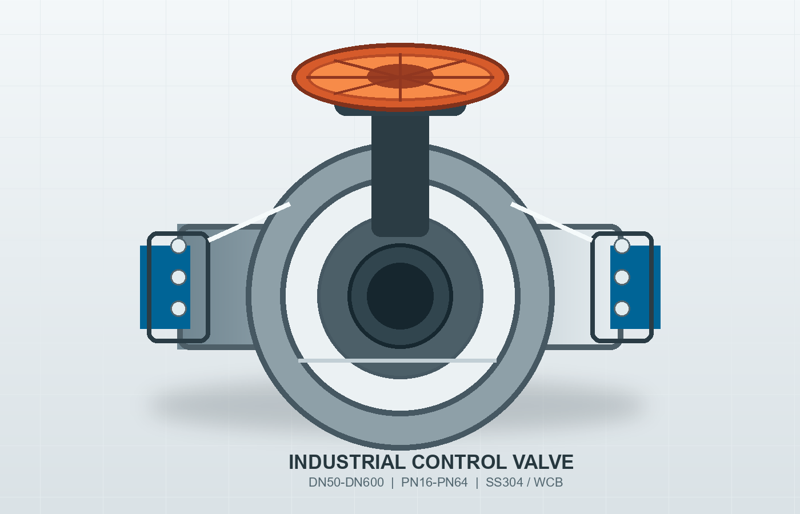

法兰球阀
启闭迅速，流阻小，适用于油品、天然气、蒸汽和水系统。

Product Range
从开关切断到精细调节，按介质、温度、压力和安装方式快速匹配合适阀型。
启闭迅速，流阻小，适用于油品、天然气、蒸汽和水系统。
结构紧凑，重量轻，适合水处理、暖通和低压管网控制。
全通径设计，压力损失低，适合长周期稳定运行场景。
自动防止介质倒流，保护泵组、压缩机和关键管线设备。
Engineering Strength
关键密封面采用精密加工与耐磨材料组合，阀体经过强度校核和压力测试，减少现场渗漏、卡滞与频繁维护带来的停机风险。
金属硬密封、PTFE、EPDM、NBR 等密封方案可按介质选择。
支持 WCB、CF8、CF8M、球墨铸铁及双相钢等常用材质。
可配置手柄、蜗轮、电动、气动与限位反馈附件。
Specifications
| 公称通径 | DN15-DN1200，可按项目需求定制 |
|---|---|
| 公称压力 | PN10、PN16、PN25、PN40、PN64 |
| 适用温度 | -29°C 至 425°C，特殊高温工况可选硬密封结构 |
| 连接方式 | 法兰、对夹、焊接、螺纹、卡箍 |
| 检测项目 | 壳体强度、密封性能、尺寸检验、材质追溯 |
Project Inquiry
支持项目清单报价、样本资料、CAD 外形图和执行器配置建议。